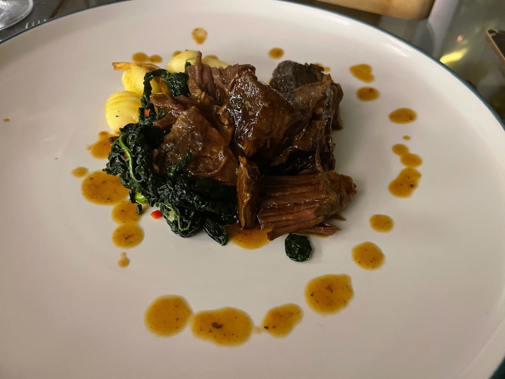

Fiancé’s birthday supper came out rather amazingly. If you can the feast box from Norma London is fantastic.

Gyroscope gave me this lovely warning on Monday and sure enough I’m now on my ass with a cold. Pretty sure they’re wizards over there.

Caught In & of Itself (https://letterboxd.com/film/in-of-itself/) last night. Without a doubt if you’re into storytelling, the importance of meaning and finding out who you are. I would give it a watch. üçø

For the past little while I’ve been playing around with static site generators and different systems for my website. I’ve wanted to adopt an incrementally correct website since I read Brian Lovin’s post, but just couldn’t find a process that worked for me.
I rediscovered Micro.blog, which feels like all the things I liked about the fancy generator world with less of the mental backflip of Git pushes and maintaining dependencies. So I’ve moved my site over, and I’m quite looking forward to sharing the little and big things I’ve been working on.
Still fixing styling bugs and a few formatting issues, but I feel this might be the best fit for me to keep things a little bit more updated on a regular basis.